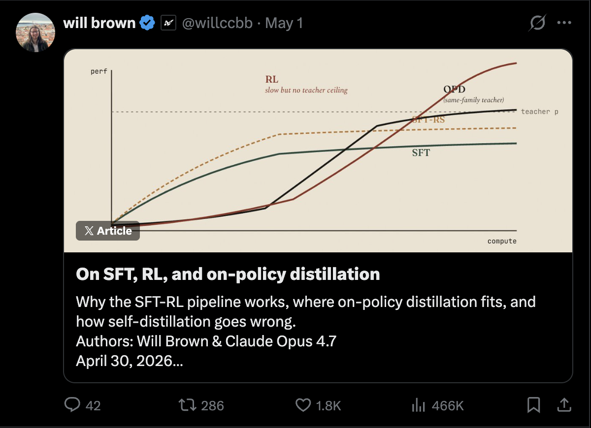
On SFT, RL, and on-policy distillation
2026.04.30 · 梯度几何 · Meta-Algorithm · Pareto 最优教师
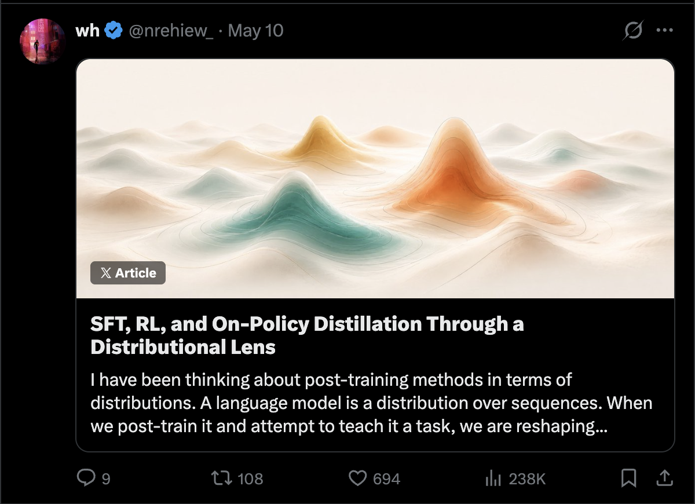
SFT, RL, and OPD Through a Distributional Lens
2026.05.10 · 分布视角 · 实验验证 · 产业实践
KL 散度的非对称性是理解 SFT 与 RL 行为差异的基础。用简单分布 Q 拟合复杂分布 P 时，优化方向不同会导致截然不同的结果。
minQ DKL(P || Q) = minQ ∑ P(x) log P(x)/Q(x)
期望在真实分布 P 上计算。
Mean-Seeking / Zero-Avoiding
为了不遗漏 P 的任何峰值，Q 倾向于变得宽而平坦，覆盖 P 所有非零区域。
若 P 是多峰分布，Q 会用一个大方差的单峰罩住所有峰 — 宁可错杀一千，不可放过一个。
SFT = 最小化 Forward KL — 模型必须对训练数据中所有出现的 token 分配概率，即使这意味着牺牲原有分布的模式。
minQ DKL(Q || P) = minQ ∑ Q(x) log Q(x)/P(x)
期望在模型分布 Q 上计算。
Mode-Seeking / Zero-Forcing
Q 倾向于找到 P 的单一最高峰并精确拟合，完全忽略其他峰。
宁缺毋滥 — 生成质量高但多样性低，可能引发 mode collapse。
RL ≈ 最小化 Reverse KL — 模型只在自己有把握的区域分配概率，不会被迫覆盖远离当前策略的分布区域。OPD 同样使用 Reverse KL。
| Forward KL DKL(P || Q) | Reverse KL DKL(Q || P) | |
|---|---|---|
| 期望基于 | 真实分布 P（面向数据） | 模型分布 Q（面向模型） |
| 拟合策略 | 覆盖 — 宽而平坦（Mean-Seeking） | 聚焦 — 窄而精确（Mode-Seeking） |
| 典型方法 | SFT（最大似然估计） | RL / OPD / OPSD |
| 风险 | 过于平滑，牺牲旧模式 | Mode collapse，多样性不足 |
Forward KL 要求模型对所有观察到的数据都要有良好的解释（面向数据）；Reverse KL 要求模型生成的任何样本都是逼真的（面向模型）。
这种根本差异使得两者在后训练中扮演截然不同的角色 — 后面我们会看到，SFT 的灾难性遗忘和 RL 的抗遗忘性都可以从这个视角得到解释。
在后训练语境下
SFT = Forward KL — 模型必须覆盖训练数据的所有 token，可能以牺牲原有能力为代价
RL ≈ Reverse KL — 模型只在自己的高概率区域更新，隐式保护已有分布
OPD / OPSD = Reverse KL — 但教师信号的质量决定了"聚焦"的方向是否正确
这些问题的答案，都可以从 KL 散度的方向、数据的 on/off-policy 属性、以及梯度的几何特性 三个视角得到统一的解释。
语言模型是序列上的分布，后训练就是重塑这个分布。标准 pipeline 的 SFT → RL 排序不是惯例，而是有数学原因的。
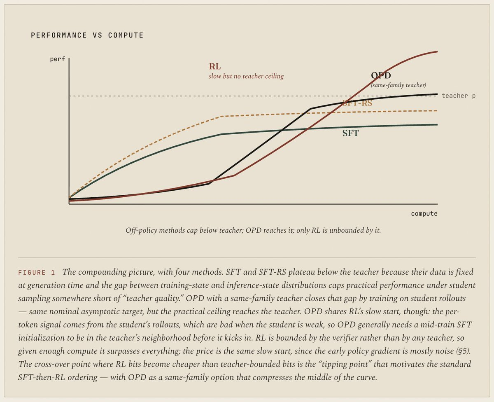
用外部数据集做 cross-entropy 训练。目标分布在训练前就已固定，天花板由教师/数据决定。
SFT 的本质：对每个 token 施加均匀的、密集的监督信号，不区分任务关键 token 与风格 token。
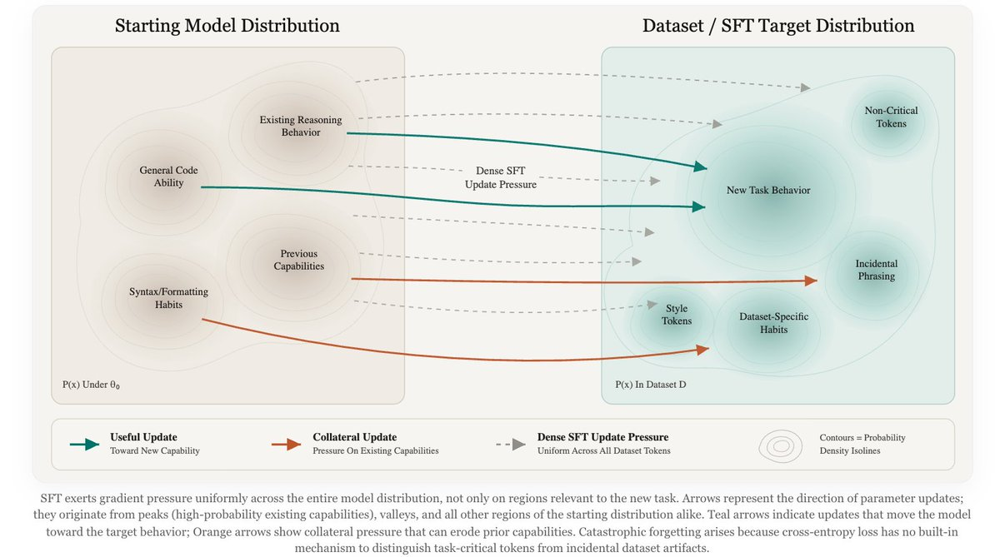
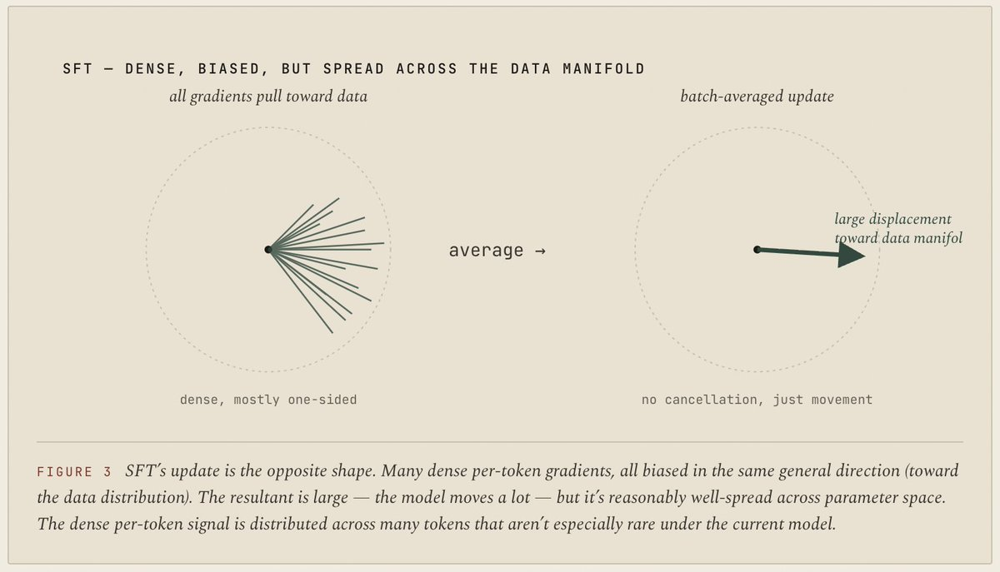
因为大多数 SFT 更新只是在强化模型已经大致知道的东西，很少有 token 要求模型把接近零的概率拉到很高。
Ref: Diao et al., Understanding the Dark Side of LLMs' Fine-Tuning Data (2026)
此处"教师"泛指 SFT 训练数据的来源 — 可以是更强的模型生成的 completions，也可以是人类标注。Brown 在原文中将其统一称为 teacher SFT，以便与 OPD / OPSD 的教师概念拉齐到同一框架下。
e.g. Qwen3-32B → Qwen3-8B
e.g. GPT-4o → Llama-3
这个区分至关重要：On-policy distillation 基本只在 same-family 设定下可用。
模型从自身采样，由 reward 指引方向。没有固定的目标分布，天花板由验证器决定。
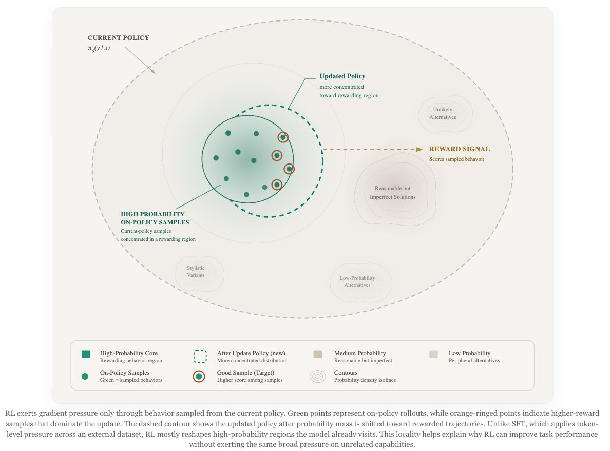
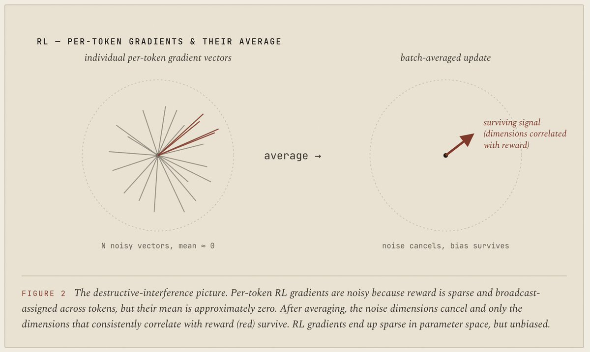
RL 的稀疏性不是纯粹的缺陷 — 它是无偏估计器的代价。每步移动很小，但方向可信。
KL 方向、数据依赖正则化、稀疏参数更新 — 多种解释各有道理，但 on-policy 数据才是核心承重件。
问题：即使去掉显式 KL 惩罚，RL 仍然不怎么遗忘
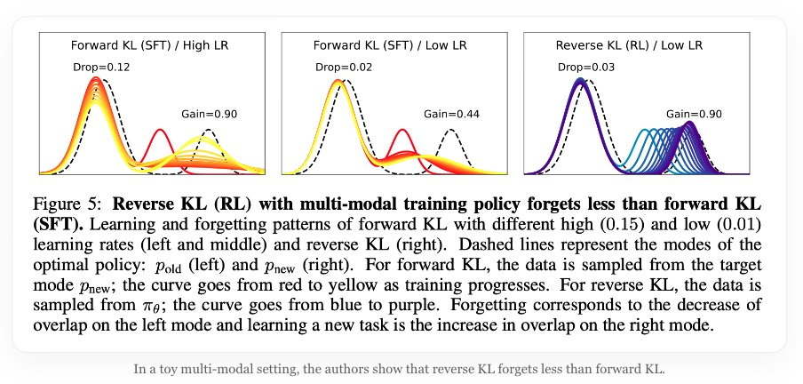
Ref: Chen et al., Reinforcement Learning as Reverse KL Minimization (2025) · Mukherjee et al., RL Finetunes Small Subnetworks (2025) · Lai et al., Data-Dependent Regularization in RL (2025)
不是 RL 算法本身特殊，也不是显式 KL 惩罚在做主要工作。
On-policy 采样才是真正让你在提升能力的同时不炸掉 KL 预算的东西。
SFT 的目标分布可以离起始分布任意远；RL 的目标在每一步都紧贴当前策略。
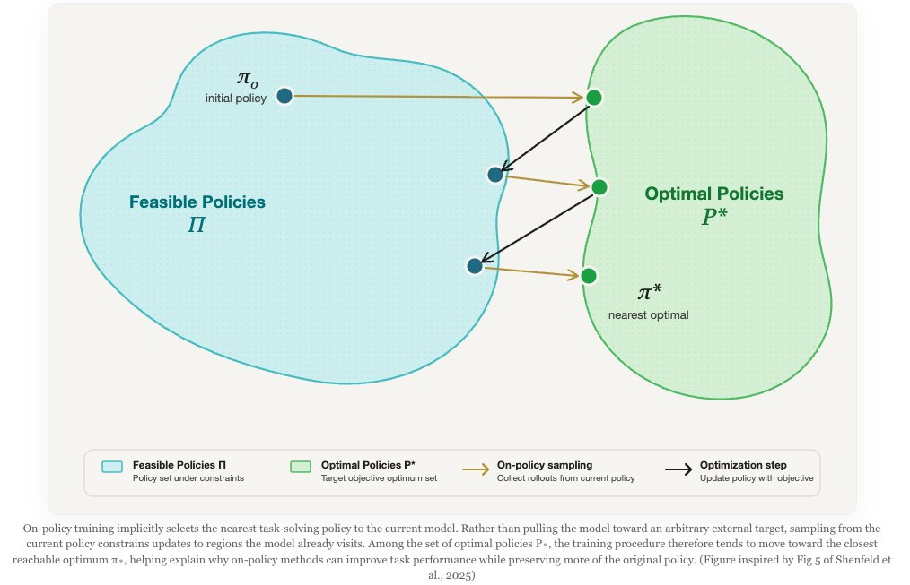
Ref: Shenfeld et al., On-Policy Learning Implicitly Regularizes Against Forgetting (2025)
学生自己采样，教师逐 token 打分。兼具 RL 的复合效应和蒸馏的信号密度。
Framing 注意：OPD 不等于"全面优于 RL"。更准确的说法是 — OPD 是 moderate compute + same-family teacher 下的 compute-optimal shortcut，能更快到达教师水平；但 RL 的天花板由 verifier 决定，在极限 compute 下可能更高。
Minimal Code Editing 任务：给模型一个有 bug 的函数，要求修复 bug 且不改动其他部分。分别用 SFT 和 RL 训教师，再用两个教师做 OPD 蒸馏。
这个任务能同时测两件事：泛化（在不同 corruption 类型上评估）和遗忘（在 LiveCodeBench 上检测通用代码能力退化）。
数据来源（on-policy 采样）比教师质量更重要。这意味着我们可以用 SFT "过拟合"一个专家模型，再用 OPD 把能力转移出来。
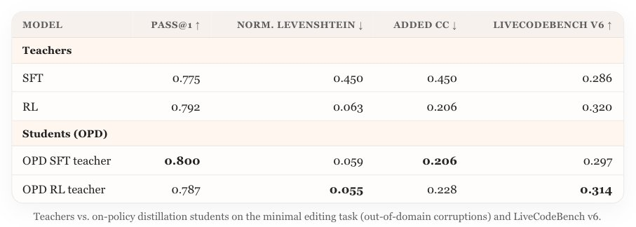
Ref: Agarwal et al., On-Policy Distillation of Language Models (2023) · Ross et al., DAgger: A Reduction of Imitation Learning (2010)
教师在学生的错误前缀上给建议，而非在教师自己的前缀上 — 监督更有针对性。
KL matching 传递了风格、不确定性、推理结构等信息，可能在不复制教师 greedy 行为的情况下改善采样分布。
OPD 的 entropy 下降远比 RL 剧烈 — reverse KL 的 mode-seeking 导致模型在新能力上高度集中。
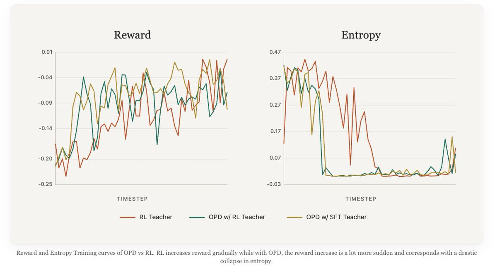
没有 same-family 教师时，用自己当教师 + privileged information。两种实例化：
SDFT — 教师看到 expert demonstration（分布偏移较温和）
OPSD — 教师看到 ground-truth answer（分布偏移更剧烈，梯度集中是致命风险）
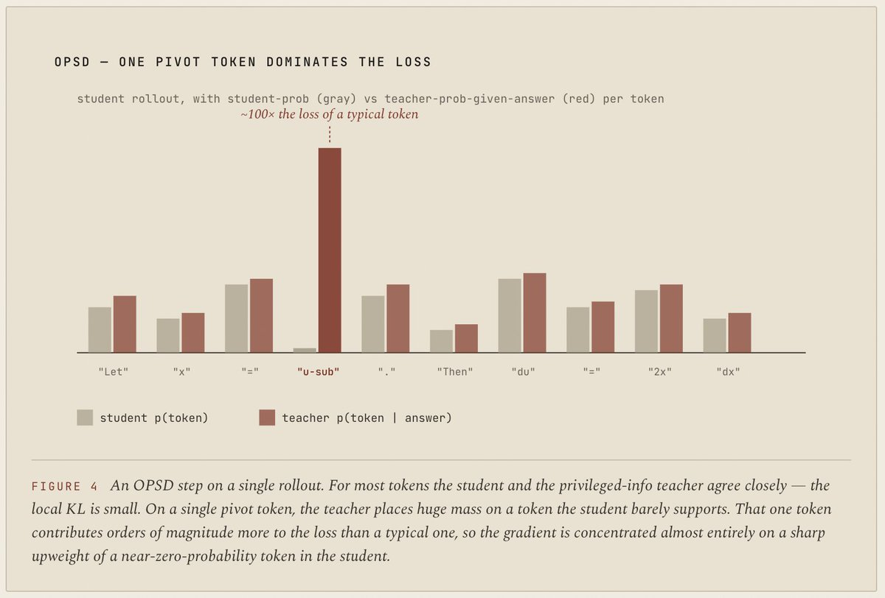
Ref: Zhao et al., OPSD: On-Policy Self-Distillation for LLMs (2026)
OPSD 的处境类似 RLHF 而非 RLVR：教师信号的偏差更高，必须用 clipping / trust-region 防止过度优化错误方向。
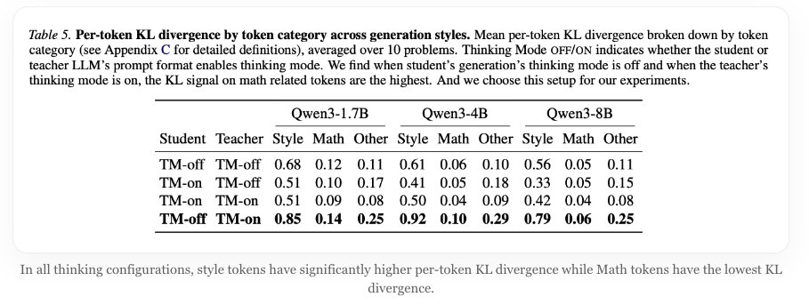
Ref: Zhao et al., OPSD: On-Policy Self-Distillation for LLMs (2026)
梯度特性的三轴分类（sparse/dense, biased/unbiased, concentrated/diffuse），以及将所有方法纳入同一个 meta-algorithm。
每个 token 是否都得到独立的学习信号？
梯度的期望方向是否指向一个固定目标？
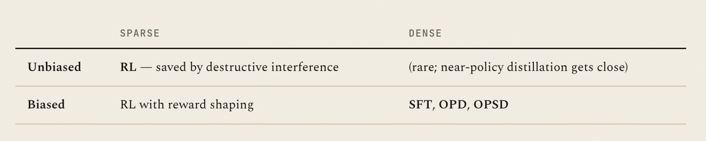
SFT、OPD、OPSD 都在右上角（dense + biased），但它们的行为差异巨大 — 仅靠这两个轴不足以区分。我们需要第三个轴。
数据本身多样，偏置方向分散在许多 token 上。大多数更新只是在强化模型已经大致知道的东西，很少要求把接近零的概率拉到很高。所以 SFT 容错性好 — 数据有些脏、学习率有些偏都不会崩。
教师与学生分布结构接近（同 tokenizer/recipe），per-token KL 普遍较小且均匀。继承了 SFT 的分散性。
教师看到了答案后，少数 pivot token 的 KL 爆炸式增长（~100x），梯度被这几个 token 主导。RL 的噪声可以抵消，SFT 的偏置足够分散 — OPSD 两者都没有。这就是为什么不加 clipping 会在 ~100 步内崩溃。
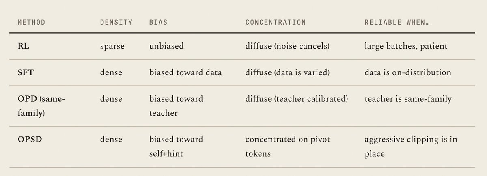
Punchline：OPSD 是唯一同时具备 dense + biased + concentrated 的方法。这就是为什么它需要显式防御（per-token KL clipping、固定教师为初始策略）而其他方法不需要。下一步的方向是：寻找 KL 天然分散的教师，而不是靠 clipping 来压制集中的教师。
Brown 将所有后训练方法统一为一个 token-level policy gradient，由三个旋钮控制：
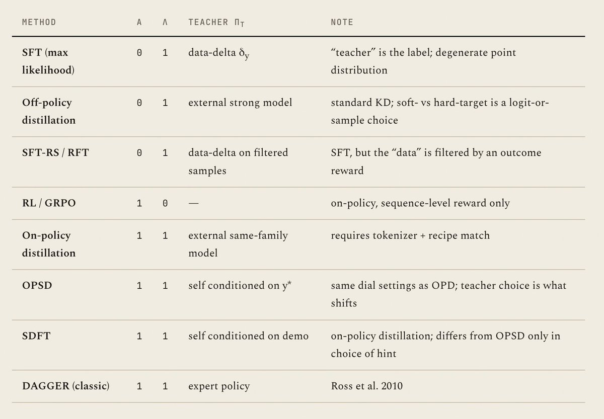
Caveat：这个参数化是说明性的，不是在建议真的在 $(\alpha, \lambda)$ 的中间地带插值。Brown 明确指出：SFT / RL / OPD 这几个"干净的角落"之所以好用，恰恰是因为不需要 importance-sampling 修正。
真正重要的问题不是调这三个旋钮，而是：选定 KL 预算 $\beta$ 后，为当前学生找到最优的教师。
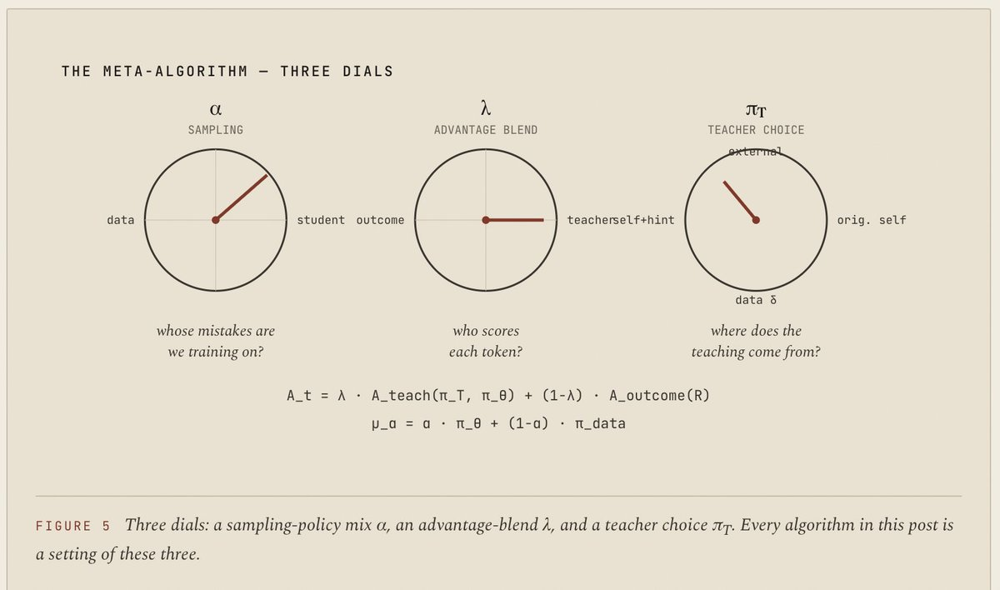
Expert merging 正成为后训练的最终阶段。Pareto 最优教师指出了下一代算法的形状。
Pretrain → SFT → RL/Self-distill → OPD merge
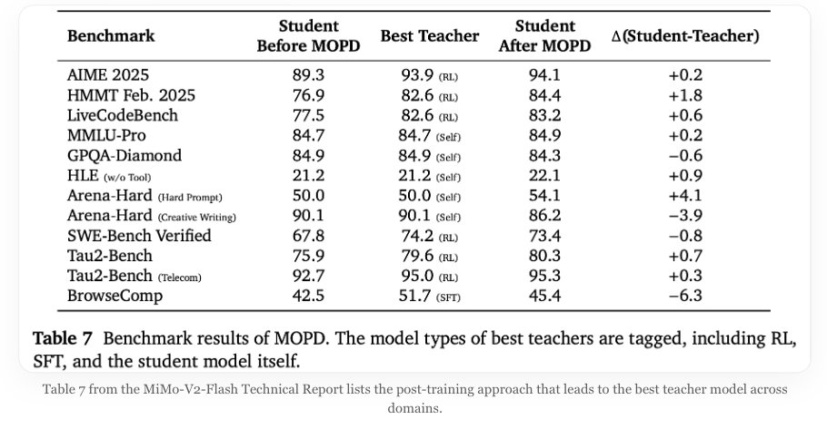
Ref: MiMo-V2 Flash Technical Report (2026) · GLM-5 Technical Report (2026) · DeepSeek V4 (2026)
我们想要的教师策略应该：在每步更新中最大化 reward 改善，同时受 KL 约束保持稳定。
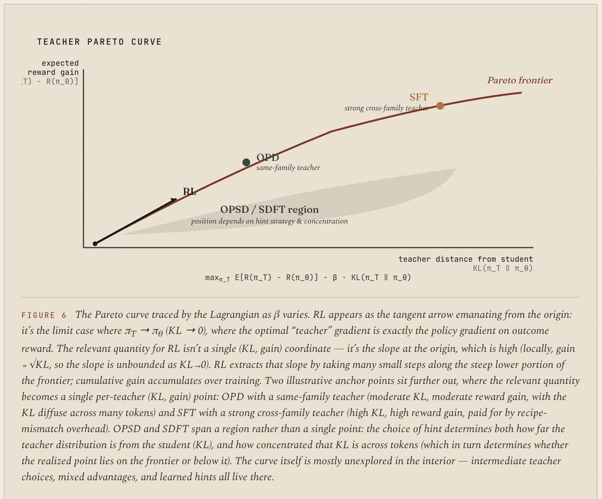
nrehiew (2026) · Brown & Claude Opus 4.7 (2026) · Lu et al. (2025) · Zhao et al. (2026) · Shenfeld et al. (2026)